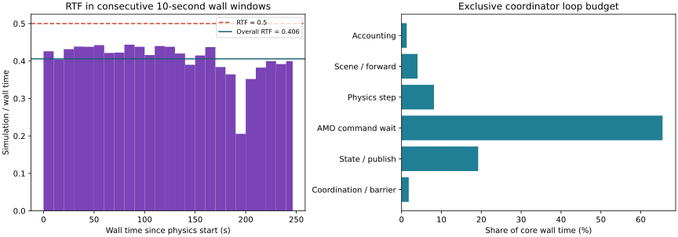

在多线程、多物理引擎与分布式网络并存的工业具身平台上，随手修改底层调度间隔或暗自加入运行时停机阈值往往会掩盖真实性能瓶颈，甚至破坏硬件接口与高层规划间的同步时序。因此，平台将关键调度参数与运行主权收口为受基线审计工具监督的冻结规则（见
docs/development/factory-runtime-baseline.md 与
docs/development/factory-rd-frozen-features.md）。

核心冻结运行基线参数
| 基线配置项 | 当前授权取值 | 否决 / 禁止变更项 | 源码与清单约束 |
|---|---|---|---|
| Python GIL 调度间隔 | 0.0002 s（200 µs） |
明确否决 50 µs 激进候选方案，禁止私自调低 |
docs/development/factory-runtime-baseline.md |
| Smart Factory 清单仿真步长 | physics_hz: 500、control_hz: 50、sal_transport: shm_v2 |
保持统一异步 SAL、快照与配置生成逻辑不变 | configs/scenes/manifests/factory.json |
| C919 清单仿真步长 | physics_hz: 200（5_000_000 ns）、control_hz: 50 |
c919_system.py 启动前硬检验步长必须等于
5_000_000 ns |
configs/scenes/manifests/c919.json、deployment/c919_system.py |
单机 body_rt 控制与保护 |
200 Hz（5 ms）HAL
采样/下发；50 Hz（20 ms）局部安全评估 |
robot_body_rt 设置
restart_on_crash = false 与
mlockall = true |
src/robot_app/processes/body_rt_main.cpp |
| 带外安全心跳与局部超时 | 250 ms
遥操作死人开关（teleop_deadman_ns）；1000 ms
心跳超时切 LOCAL_HOLD |
超时仅置本机
LOCAL_HOLD，fleet_wide_estop_triggered 恒为
false |
src/robot_app/algorithms/safety/protection_core.hpp |
| 独立视觉流并发上限 | max_active_video_streams: 2，最大 ROI
640×480，租约 15.0 s |
禁止高分辨率全画幅无节制推流占满带宽 | configs/scenes/manifests/*.json、roi_gateway_guard.py |
治权裁定：废除
RTF 0.5 自动停机与操作员停止唯一主权
平台历史上曾探讨过以实时率阈值自动中断仿真会话的策略（例如早期关于
RTF 0.5
准入/停止的记录），但在最新工程治权裁定下已作明确废止，任何新增代码不得变相恢复：
- 废除运行时自动停机门禁：禁止在运行调用链中新增基于实时率的运行时校验器、停机门限或会话级终态
STOP自动切断模块；双场景清单均显式固定"no_rtf_auto_stop": true与"independent_operation_failures": true。 - 区分研发目标与强制停机规则：平均
RTF > 1、最低RTF > 0.8仅作为算法优化与调度性能改进的研发追求目标，绝对不能写成触发停机的自动开关。 - 操作员手动停止唯一主权：常规长周期完整仿真不恢复历史
600 秒或固定步数上限；仿真会话只能由运行方或操作员经
./facrictl stop或./facrictl close手动终止。 - 单机失败严格局部隔离：当某台机器人出现运动失稳、抓握脱离或局部保护超时时，故障仅影响本机并在统计账本中按真实计数保留，绝不牵连其余在线机器人执行全队停机。
时钟域分离与发布可信度原则
为保障离线分析与真机同步的一致性，系统强制执行双时钟隔离规则：SalSampleWire
与 SpatialPosePod
明确分离仿真物理世界时钟（sim_time_ns）与宿主机单调挂钟（host_monotonic_ns）。上游推理与规划组件在消费感知观测或状态快照时，必须同时检验单调递增的会话代际号
epoch 与采样时间戳差值；当硬件切换、仿真复位或
body_rt 发生重连时，epoch
自动递增，一切旧代际轨迹槽位（TrajectorySlotPod）与未完成的任务指令将被
robot_body_rt
立即丢弃，从根源上切断跨重启指令误执行风险。